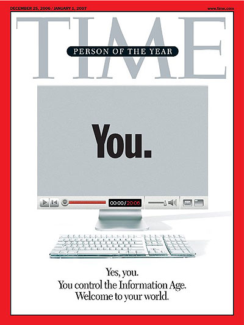
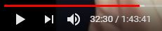
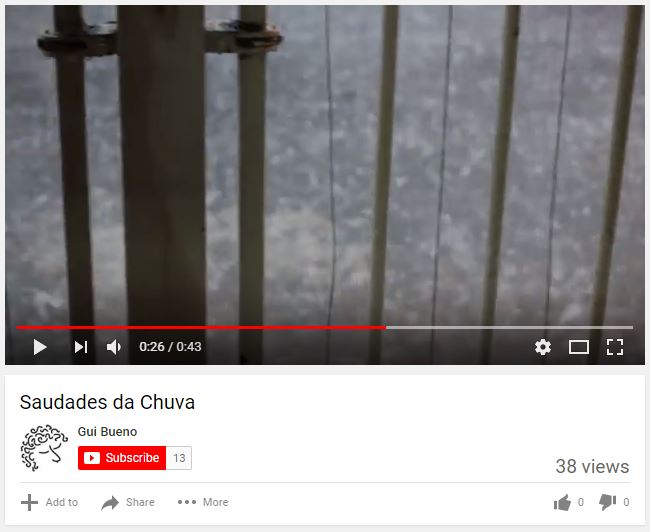
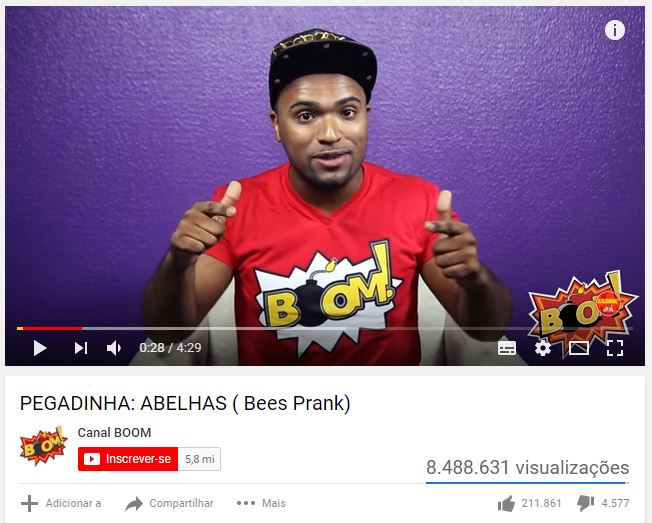
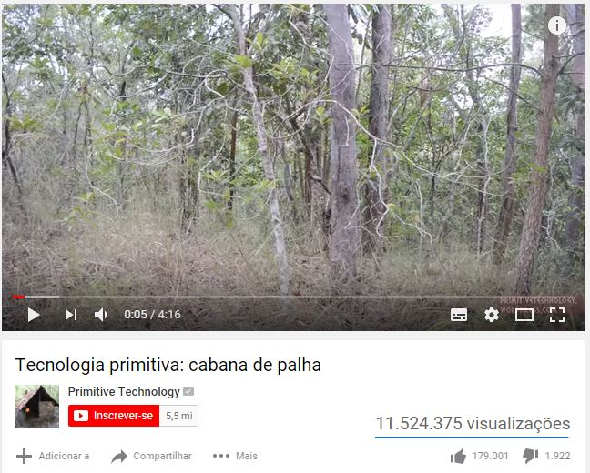

0. Preparação
Letramento Digital
Módulo 3, Encontro 3.2
Gui Bueno, muito prazer!
Bem-vinda, Cris!
Quem somos nós?
- Nome.
- O que você quer aprender a fazer com celular?
Contabilizar Presenças
Leitor de Cartões
Lado de fora da sala
A maquininha está FUNCIONANDO
Internet Livre
- Terças às sextas: das 14h às 15h.
- Sábados, domingos e feriados: 11h às 12h.
Instrutores
- Funcionário para ajudar na Internet Livre.
- No momento, o instrutor sou eu.
Web 2.0
Usuários geradores de conteúdo.
Retomando o início da internet...
- 1969: 4 computadores conectados
- 1986: 5,000 computadores conectados
Que grupos compunham esses 5,000 computadores?
Centros de Inteligência
Universidades
Agências de Tecnologia
Empresas de Tecnologia
Empresas de Tecnologia
Só para quem tivesse condições...
- Estar na internet era muito caro.
- Além disso, extremamente difícil.
- Códigos complexos e necessários.
Primeiros websites a partir de 1991
Facilitando para que as pessoas pudessem acessar.
Como eram esses sites?
Modelo Folheto
Catálogos de cada empresa.
Exemplo: Pizza Hut
- Somos a Pizza Hut e nossa pizza é boa.
- Temos os seguintes sabores: ...
- Os preços variam entre ___ e ___.
- Para fazer um pedido, ligue para ___.
- Veja as fotos das nossas pizzas.
Exemplo: MTV
- Somos a MTV, o canal de música na TV.
- Nossos programas são os seguintes: ...
- Os horários de cada um são estes.
- Para assistir aos programas, ligue no canal ___.
- Veja as fotos das nossos artistas.
Web 2.0
VOCÊ também produz o conteúdo
Sites na Web2.0
- Dinâmicos
- Interativos
- Expansíveis
Exemplo: Redes Sociais
Datas
- ~2000: primeiros sites desse tipo.
- 2004: termo é usado pela primeira vez.
- 2005: boom desses sites e redes sociais.
- 2006: novo formato já estabelecido.
Pessoa do Ano da Revista Times
Destaques
- Blogs
- Wikipédia
- Youtube
#1 Blogs
O primeiro formato de conteúdo gerado por usuário.
web + log
diário na rede
Em outras palavras:
- Sites Pessoais
- Atualizados com Frequência
- Temas variados
Colunas de Jornal
Cada um é dono do próprio jornal.
Acessando um Blog
Conteúdo mais novo ainda
Conteúdo mais novo
Conteúdo Novo
Exemplos
Datas
- ~2000: surgem os primeiros blogs.
- 2007: mais de 112 milhões de blogs no mundo.
- ~2017: formato blog se mistura a outros formatos.
#2 Wikipedia
A enciclopédia colaborativa mundial.
Quais eram as dificuldades?
Eis que surge a Wikipédia
- Enciclopédia gratuita, livre, ...
- ... colaborativa e multilíngue.
- Lançada em 15 de janeiro de 2001.
- Cerca de 365 milhões de leitores.
- 277 idiomas ativos!
Vamos acessá-la?
(versão ditado)
https://www.wikipedia.org/
Práticas
- Roberto Carlos
- Vila Mariana
- O Clone
- Eclipse Total
- Grécia
- Gilberto Gil
- Anfíbios
- Fátima Bernardes
- Grupo sanguíneo
- Gal Costa
#3 Youtube
Muito mais que televisão.
Definição em 1 linha
Serve para ver vídeos sobre quase tudo.
História
- Fundado em 2005, por 3 amigos.
- Vendido à Google em 2006, por US$1.65bi.
- 70 mil vídeos assistidos por segundo.
Primeiro e mais importante...
se pronuncia (no Brasil): iú-TU-bi
Vídeos sob demanda
Você escolhe exatamente ao que e como assistir.
Quais vídeos?
Há muito conteúdo sobre quase tudo!
- Músicas e shows.
- Entrevistas.
- Informações e dicas.
- Discussões.
- Cursos, aulas, tutoriais.
- ...
https://www.youtube.com.br/
Controles
- Play/Pause
- Volume
- Indicador de tempo
Práticas
- Propagandas Antigas Anos 50
- Ballet O Quebra-Nozes
- Drauzio Varella
- Como dormir melhor
- Furacão Irma
- Curso de computador
- Programa do Jô Roberto Carlos
- Como tocar violão
- Vila Mariana
- Elis Regina Jogo da Verdade
Como o YouTube se mantém financeiramente?
Monetização
- Qualquer pessoa pode incluir um vídeo no Youtube.
- Qualquer pessoa pode assistir a um vídeo no Youtube.
- Com tanta gente visitando, o Youtube vende anúncios.
- Quem é muito assistido, ganha uma parte desse dinheiro.
Exemplo
Exemplo
Você sabe o que é um YouTuber?
Pessoa que trabalha fazendo vídeos para o YouTube.
Estudos de Casos
Manual do Mundo
Drauzio Varella
Lucas Lira
Canal Boom
Primitive Technology
A quais conclusões chegamos?
O que não há no YouTube?
Alguns conteúdos protegidos por direitos autorais*.
(*às vezes, há!)
Mais práticas
- Show do ____
- Entrevista com ____
- Como fazer ____
- Matéria sobre ____
- Curso de ____
- Sesc 24 de Maio
Muito obrigado!
gob.bueno@gmail.com